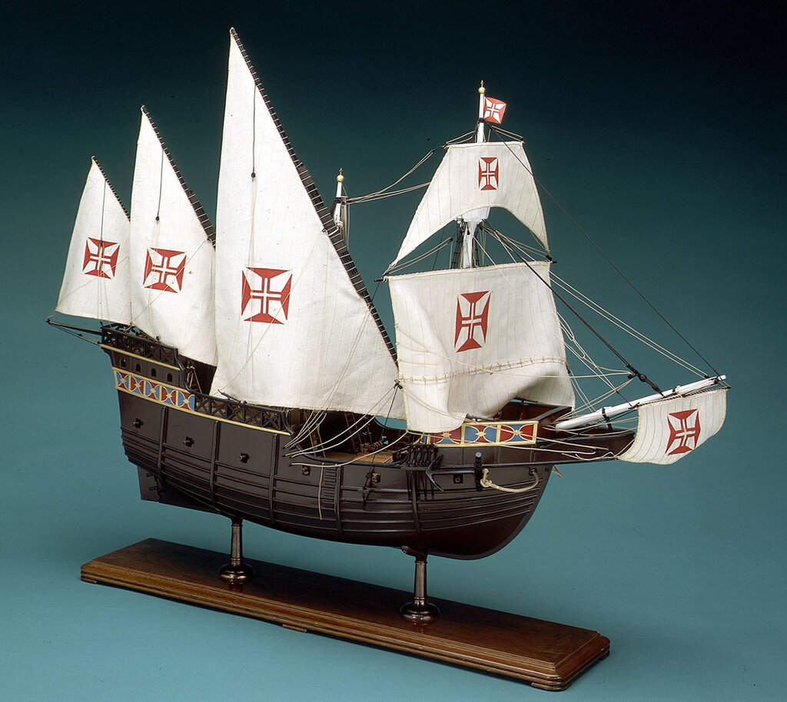
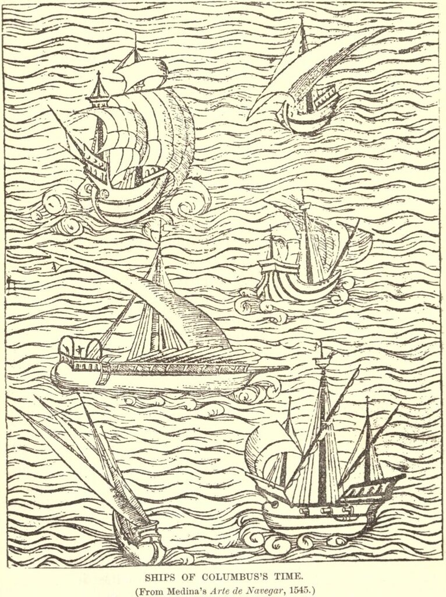
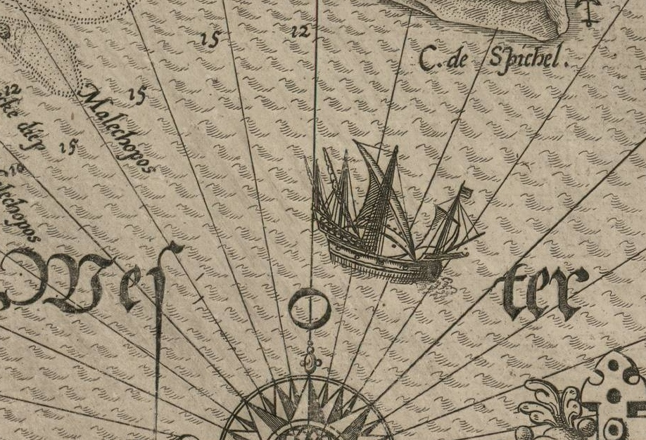
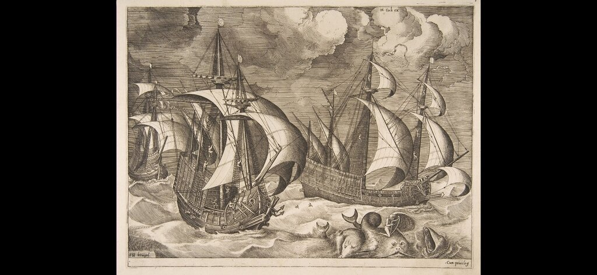
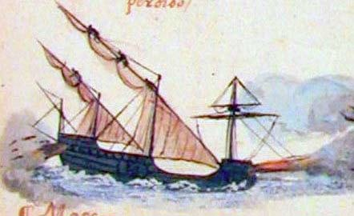
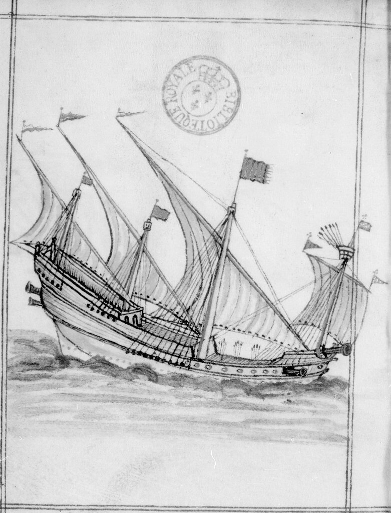

Эволюция каравеллы

Модель португальской каравеллы. Royal Museums Greenwich
По мере освоения маршрутов плавания вдоль африканского побережья и далее к Индии португальцы создавали и оборудовали все новые пункты базирования своего флота. А вместе с этим все менее актуальным становилось требование к каравелле быть пригодной для неотложного автономного ремонта. Эту задачу решали береговые команды. Строители каравелл получили возможность наращивать грузоподъемность, а следовательно и водоизмещение своих кораблей. Первые каравеллы с двумя-тремя мачтами с латинскими парусами (их позже стали называть caravela latina), имевшие водоизмещение до 50 тонн, длину от 20 до 30 м и ширину 6-8 м, стали уступать место более крупным кораблям. Постепенно менялось и парусное вооружение каравелл. Стимулом тут, как ни странно, послужила набиравшая темпы работорговля. Впервые рабов перевезли на каравелле в 1441 году. По приказу инфанта Генриха Мореплавателя капитан каравеллы Нуну Триштан (Nuno Tristão) возглавил исследовательскую экспедицию к мысу Кабо-Бланко. Триштану удалось сговориться с местным вождем и приобрести у него несколько пленников из другого племени. На корабле другого участника экспедиции Антано Гонсалвиша (Antão Gonçalves) невольники были отправлены в Лиссабон. Так началась эра работорговли на западном побережье Африки.
Судовладельцы оказались перед дилеммой: латинские паруса, как было отмечено выше, требовали присутствие на борту многочисленных экипажей, экономическая же рентабельность диктовала необходимость сокращать команду, чтобы высвободить место для живого груза.
На каравеллах, наряду с латинскими парусами, стали появляться прямые. Сначала это был небольшой парус на небольшой же фок мачте, которую добавили на двухмачтовых каравеллах, как это изображено на правом нижнем рисунке из трактата Педру де Медина Arte de navegar (1545).

Позже прямой парус появляется уже на трехмачтовых каравеллах.

Изображение из атласа Лукаса Вагенара Speculum nauticum super navigatione Maris Occidentalis... (1586)
Постепенно прямые паруса на каравеллах получили дальнейшее развитие. На фок-мачте ставили уже не только нижний парус, но и марсель (как мы видим на модели каравеллы из Военно-морского музея в Гринвиче, показанной в начале поста).
Прямыми парусами стали оснащать не только фок-мачту, но и грот-мачту. Каравелла все больше походила на судно с прямыми парусами - нао. В сочетании с общей округлостью форм корпуса каравеллы прямые паруса придавали кораблю схожесть с шаром – отсюда, видимо, и пошло название этого вида каравелл – caravela redonda – круглая каравелла.

Каравеллы. Гравюра Питера Брюгеля Старшего (1571)
Новый ачественный скачок в развитии португальской каравеллы связан с именем короля Жуана II. В 1474 году Жуан (тогда еще инфант) дал указание строить каравеллы с усиленной палубой, что позволяло разместить на ней тяжелую артиллерию. Новый тип корабля получил название caravela armada, он стал боевой единицей военного флота Португалии. Первоначально орудия размещали как на галерах - в носу, затем добавили пушки и на корме


Иллюстрация из наставления по морскому делу Manuel de pilotage, à l'usage des pilotes bretons (G. Brouscon), раньше 1548 г., Bibliothèque nationale de France, Département des manuscrits, Français 25374
Португалия стала одной из первых морских держав, которая начала использовать пушечные порты, изобретенные на рубеже XV и XVI веков (об этом событии мы подробно писали раньше). Пушки стали располагать вдоль борта, как это показано на изображении модели выше. Стандартная caravela armada имела 4 тяжёлых орудия на каждом борту, 6 фальконетов в кормовой надстройке и 10 малых вертлюжных орудий (canhão de berço).
Изменялась и конструкция корпуса каравеллы. Но об этом в другой раз.